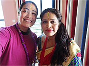
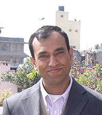
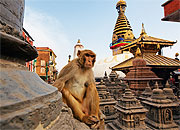
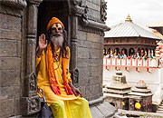
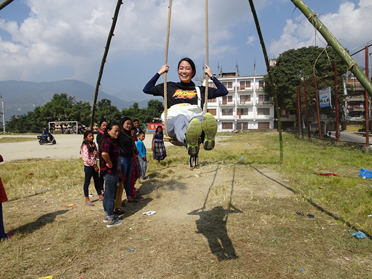
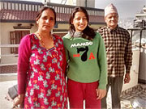
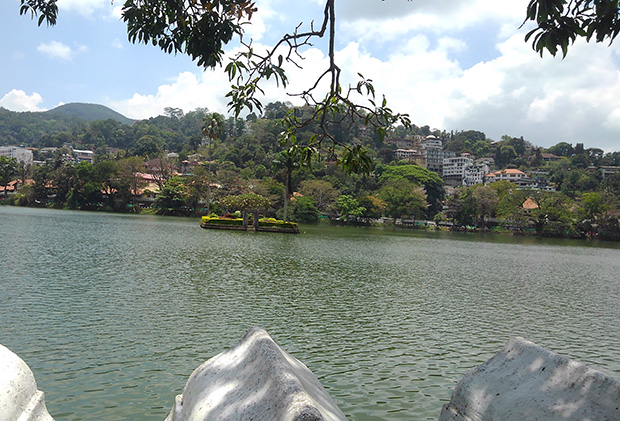

NEPAL カトマンズ・ホームステイ
ヒマラヤのふもとで、英語を学ぶ
多様な文化が交わる国で、一人ひとりのレベルに合わせた個人レッスン。生活の中で英語に触れながら、現地の暮らしに触れる日々が、新しい自分を見つけるきっかけになります。
- 異文化体験
- 個人レッスン
- 24時間日本語サポート
ネパールという国
インドと中国（チベット）に挟まれた内陸国です。インド文化とチベット文化の双方の影響を受け、民族や言語、宗教の多様性が豊かな社会が広がっています。公用語のネパール語に加え、多くの方が英語を使い、日常から旅のサポートまで英語に触れやすい環境です。
東西に連なるヒマラヤ山脈、世界遺産の散在、高原と盆地の表情の違い——滞在の仕方に応じて、風景と文化の厚みを味わっていただけます。ストゥーパの周りを歩く祈り、路地に祀られた神々。暮らしの近くに信仰が寄り添い、出会いの中に人の温かさを感じやすい土地柄です。カントリーサイド（低開発村部）に足を延ばすと、伝統的な文化が息づく村の景色にも、旅の合間にふれられます。
首都のカトマンズ周辺は、市場の活気とすぐ近くの寺社・遺跡が共存し、歩きながら学べる街です。一方で、車の行き交いは埃や排気を感じることもあり、渋滞時には市場近くの喧騒とあいまって、のどや目のケアを気にする方もいます。マスク、のど用の飴やスプレー、飲み物、小さなタオルを用意しておくと、歩き回る日を少し快適に過ごしやすくなります。一人旅でも、息を整える歩幅で街の表情を切り取っていくと、街の歩き方ひとつで、ガイドブックにはない発見が待っています。

ネパールで味わう体験
街の風景、市場、宗教の営み、食卓のまわり。神々の名が日常語に溶け合う感覚や、人と人の距離の近さは、旅の情緒を高めてくれます。見慣れない習慣に触れるたびに、言葉の学び直しの機会が生まれます。日常食のダルバート（豆のスープ、ご飯、タルカリ＝副菜）を囲む時間は、会話のテーマに恵まれた、自然な英語の練習の場でもあります。
-
異文化体験
祝祭や寺社、生活リズムの違いに、戸惑いと発見の両方を味わいながら、少しずつ受け入れ幅が広がっていきます。土地の人々の歓待や、路地裏のぬくもりに触れる旅の積み重ねを、この旅の、大切な第一歩になるはずです。
-
地域とのつながり
興味に応じて、子どもとの交流や地域活動（ボランティア）に関わることもできます。希望とスケジュールに合わせて組み合わせてください。概要は、下記の「英語留学に、社会貢献をプラス」をご参照ください。
ホームステイ
参加費用には、ホストファミリー宅に滞在し、毎日3食付きの受け入れが含まれます。お部屋まわりや生活習慣は家庭ごとに違います。初日から無理に慣れようとしなくて大丈夫です。食事の好みはできる範囲でお伝えいただき、日々小さなコミュニケーションを重ねることで、安心して過ごせる空気が生まれてきます。
個人レッスンと、日々の流れ
全コース、担当の先生との個人レッスンが基本です。滞在中の週5日、1日あたりの英語のレッスン時間の目安は4時間前後（コースにより異なります）。週のうち1日程度は、お休みや振替の扱いがある場合がございます。欠席・振替の取り扱いの詳細は、レッスン日・欠席・振替をご参照ください。
下は目安の流れです。ボランティア日や、ご自身の行動範囲に応じて、前後する日もあります。
英語留学に、社会貢献をプラス
学校での日本語教室や、地域の活動に関わるボランティアは、希望者のみ、スケジュールに応じてお申し出いただけます。英語学習と両立しながら、少し違う角度から社会を知る導線になっています。往復の交通費など、料金に含まない部分は料金の内訳をご確認ください。
短期コースの料金（例）
ネパールのプログラムでは、1週間前後の参加から計画しやすい方が多い前提で、下表のとおり多様な日数をご用意しています。まず費用感を掴みたい方は、7日間と、約2週間の12日間（11泊12日）に注目しやすい内容です。ほかの日数は、下のリンクから料金表をご覧ください。
1週間前後
7日間
92,000円
約2週間
12日間
136,500円
現地受入団体（ICEDC）と24時間のサポート
ネパールの現地手配と受入は、International Culture Exchange and Development Center（ICEDC）が担います。日本語での相談にも応じられる体制で、渡航前から滞在中までの不安を和らげる受け止め方を大切にしています。
International Culture Exchange and Development Center
現地受入団体は、International Culture Exchange and Development Center（略称 ICEDC）です。
プラタープ・チャトゥクリ氏が日本語でサポートにあたります。愛知県の名城大学博士課程に留学された経験があり、日本語で気持ちを共有しやすい体制です。小さなことでも、遠慮なくご相談ください。

24時間の現地サポート（日本語可）
現地では、滞在中を通じて相談を受け付けています。体調のこと、急な予定の変更、心配事が生じたときは、一人で抱え込まず、お知らせください。具体的な連絡方法は、出発前のご案内・現地オリエンテーションに従ってください。


参加者の声
ネパール参加の方から頂いている、印象に残った一言を抜粋して紹介します。多様な背景の方の参加者の声は、参加者の声の一覧から国別にたどることもできます。
-

「ネパールでの生活は、全てが違っていて、毎日が刺激的でした。毎日想像以上のことが起こり、一瞬一瞬が私にとって素晴らしい経験となりました。」
-

「食事も毎回とてもおいしく、日本食が恋しくなることはありませんでした。ネパールでもう一つの家族を見つけたような気分です。」
参加者レポート（抜粋）
直近のネパール参加に基づくレポートから、1日の流れとボランティアの感想を抜粋しています。全文・写真は、公開中の各ページにまとまっています。
鈴木成様（2025年7〜8月ご参加）— 1日の流れと活動

起床後はホスト家族と一緒に朝食。午前は、日本語教師のボランティア。昼食のあと、英語の個人レッスン。午後は観光や、ホストの息子さんと過ごしながら街を歩き、夕食、夜の英語の時間、という日もありました。
ボランティアでは、一校舎で日本の文化や漢字を扱い、生徒の皆さんと歌を分かち合ったことや、本で読んでいた方と校長先生にお会いできたことが印象深かった、とのことです。
※引用は、公開ページの表現に基づく要約です。最新の原文は上記リンク先を優先します。
ネパール現地情報
食事・交通・安全・文化・暮らしの要点を、出発前のイメージづくり用に整理しました。味わいや体験の雰囲気は ネパールで味わう体験、横断的なQ&Aは よくある質問 もご利用ください。
食事
ダルバート（豆のスープ、ご飯、タルカリ＝副菜）を囲む食卓が、生活の基本形の一つです。手で食べる場面では右手が無難です。家庭ごとの慣習はさまざまなので、分からなければその場で聞いてみてください。スリランカで「先にお客様」という歓待の流れの例は、スリランカページ をご参照ください。
交通
カトマンズ市内は徒歩とタクシー、配車サービスを使う方もいらっしゃいます。路線バスはルールが分かりにくいことがあるため、慣れない長距離は現地スタッフやホストに相談してください。空港からの送迎は、お手配の案内に従ってください。
安全
情勢や注意事項は 外務省 海外安全ホームページ で最新情報をご確認ください。人混みや夜道では、派手な装い・貴重品の管理に気を配ると安心です。
文化
ヒンドゥー教と仏教が身近に共存し、ストゥーパや寺院が街に点在します。サリーの着付け体験など、時期や受入状況によってご紹介できる内容もあります。宗教施設では静かに、履物の扱いなど現地の案内に従ってください。文化体験の例は よくある質問 もご参照ください。
現地生活Tips
乾季は埃が舞いやすく、市街地の交通量が多い時間帯は、排気や埃が気になることもあります。カトマンズの市場近くは活気のある一方、音のレベルも高く感じる方がいらっしゃいます。マスク、飲み物、のど用の飴やスプレー、小さなタオルは、歩き回る日の心強い味方です。夜遅い時間帯の単独歩行は、現地の案内に沿って控えめにすると安心です。
飲み水
生水は飲まず、沸騰した水か、密封されたミネラルウォーターを利用してください。ホームステイ先や外出先の習慣に合わせ、口にする前の確認をおすすめします。
電圧・コンセント
一般家庭の電圧はおおむね220Vです。日本からお持ちの機器は、変圧器の併用をおすすめします。定格表示が範囲内でも、瞬間的に高い電流が流れる例があるとの報告があります。コンセントの形状は日本と異なるため、変換プラグをご持参ください。持ち物の目安は 出発までの流れ や よくある質問 もあわせてご確認ください。
トイレ・清潔・虫よけ
用を足したあと、水を使う習慣のあるトイレもあります。ホームステイ先では、トイレットペーパーが手元に揃うようお願いしていますが、補充のタイミングは家庭によってまちまちです。外出や観光のときは、少し多めのティッシュの持参が安心です。清潔さの感覚や虫の扱いは国や家庭で違います。不快な点は遠慮なくホストか現地事務所へ相談し、虫よけ・蚊取り線香の利用など、よくある質問 の説明も参考にしてください。
日本の常識と向こうの常識は必ずしも同じではありません。戸惑いは自然な反応です。併せて 食卓のマナーや文化の違い（Q&A） もご覧ください。

資料をご覧のうえ、次の一歩を一緒に考えましょう
国のこと、日数、費用の内訳、心配な点。事前に目を通しておいていただけると、お問い合わせ内容が整えやすくなります。
お電話でのご相談 03-6770-6191